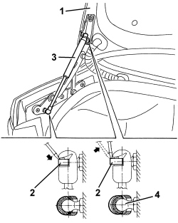

7025B26 L/H OR R/H BOOT LID LIFT DEVICE (ONE) - R+R
- Path
- Procedures > 70 FITTINGS > 7025 COMPARTMENT COVERS > 7025B BOOT LID > 7025B26 L/H OR R/H BOOT LID LIFT DEVICE (ONE) - R+R
- Kind
- repair procedure (removal / refitting; the operation number is the code)
- Applies to
- all engines; all production periods
- Interactive page
- https://sloeber94.github.io/elrnDB/alfa/159/en/#/939011217
Applies to: all engines; all production periods
 Removing
Removing
 Refitting
Refitting1. Open the boot lid and support in a stable manner.
2. Using a screwdriver, release the retaining springs from both ends of the lift device (without removing them).
3. Remove the lifting device.
4. Undo the ball pins, if necessary.

Applies to: all engines; all production periods
Refitting
Removing- Check that the lifting device is not damaged.
- If removed, retighten the ball pins.
Component | Fastening | dia | Value (daNm) | Validity |
|---|---|---|---|---|
TELESCOPIC STRUT BALL JOINT | 2.2 ÷ 2.6 |
- Refit the lifting device press-fitting the ends in the ball pins.
- Fit the retaining springs.
- Check the operation of the telescopic strut and ensure the boot lid is correctly supported.